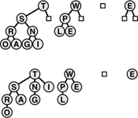
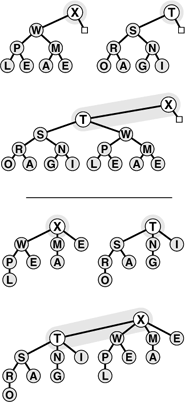
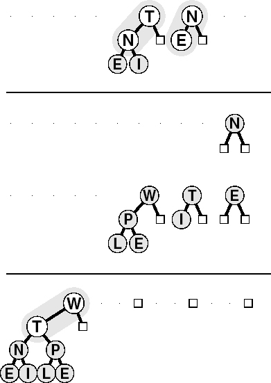
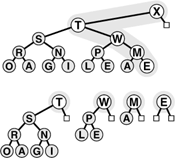
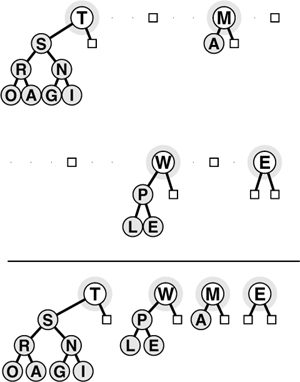
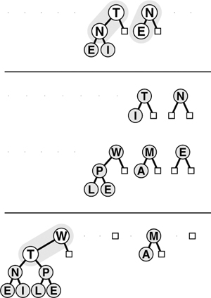

C++ Programming Robert Sedgewick - Princeton University Addison Wesley Professional Algorithms in C++, Parts 1–4: Fundamentals, Data Structure, Sorting, Searching, Third Edition
9.7. Binomial Queues
None of the implementations that we have considered admit implementations of join, remove the maximum, and insert that are all efficient in the worst case. Unordered linked lists have fast join and insert, but slow remove the maximum; ordered linked lists have fast remove the maximum, but slow join and insert; heaps have fast insert and remove the maximum, but slow join; and so forth. (See Table 9.1.) In applications where frequent or large join operations play an important role, we need to consider more advanced data structures.
In this context, we mean by "efficient" that the operations should use no more than logarithmic time in the worst case. This restriction would seem to rule out array representations, because we can join two large arrays apparently only by moving all the elements in at least one of them. The unordered doubly linked-list representation of Program 9.9 does the join in constant time, but requires that we walk through the whole list for remove the maximum. Use of a doubly linked ordered list (see Exercise 9.39) gives a constant-time remove the maximum, but requires linear time to merge lists for join.
Numerous data structures have been developed that can support efficient implementations of all the priority-queue operations. Most of them are based on direct linked representation of heap-ordered trees. Two links are needed for moving down the tree (either to both children in a binary tree or to the first child and next sibling in a binary tree representation of a general tree) and one link to the parent is needed for moving up the tree. Developing implementations of the heap-ordering operations that work for any (heap-ordered) tree shape with explicit nodes and links or other representation is generally straightforward. The difficulty lies in dynamic operations such as insert, remove,and join, which require us to modify the tree structure.
Different data structures are based on different strategies for modifying the tree structure while still maintaining balance in the tree. Generally, the algorithms use trees that are more flexible than are complete trees, but keep the trees sufficiently balanced to ensure a logarithmic time bound.
The overhead of maintaining a triply linked structure can be burdensome—ensuring that a particular implementation correctly maintains three pointers in all circumstances can be a significant challenge (see Exercise 9.40). Moreover, in many practical situations, it is difficult to demonstrate that efficient implementations of all the operations are required, so we might pause before taking on such an implementation. On the other hand, it is also difficult to demonstrate that efficient implementations are not required, and the investment to guarantee that all the priority-queue operations will be fast may be justified. Regardless of such considerations, the next step from heaps to a data structure that allows for efficient implementation of join, insert,and remove the maximum is fascinating and worthy of study in its own right.
Even with a linked representation for the trees, the heap condition and the condition that the heap-ordered binary tree be complete are too strong to allow efficient implementation of the join operation. Given two heap-ordered trees, how do we merge them together into just one tree? For example, if one of the trees has 1023 nodes and the other has 255 nodes, how can we merge them into a tree with 1278 nodes, without touching more than 10 or 20 nodes? It seems impossible to merge heap-ordered trees in general if the trees are to be heap ordered and complete, but various advanced data structures have been devised that weaken the heap-order and balance conditions to get the flexibility that we need to devise an efficient join. Next, we consider an ingenious solution to this problem, called the binomial queue, that was developed by Vuillemin in 1978.
To begin, we note that the join operation is trivial for one particular type of tree with a relaxed heap-ordering restriction.
Definition 9.4. |
A binary tree comprising nodes with keys is said to be left heap ordered if the key in each node is larger than or equal to all the keys in that node's left subtree (if any)
|
Definition 9.5. A power-of-2 heap is a left-heap-ordered tree consisting of a root node with an empty right subtree and a complete left subtree. The tree corresponding to a power-of-2 heap by the left-child, right-sibling correspondence is called a binomial tree|
Binomial trees and power-of-2 heaps are equivalent. We work with both representations because binomial trees are slightly easier to visualize, whereas the simple representation of power-of-2 heaps leads to simpler implementations. In particular, we depend upon the following facts, which are direct consequences of the definitions.
The number of nodes in a power-of-2 heap is a power of 2. No node has a key larger than the key at the root. Binomial trees are heap-ordered.
The trivial operation upon which binomial queue algorithms are based is that of joining two power-of-2 heaps that have an equal number of nodes. The result is a heap with twice as many nodes that is easy to create, as illustrated in Figure 9.16. The root node with the larger key becomes the root of the result (with the other original root as the result root's left child), with its left subtree becoming the right subtree of the other root node. Given a linked representation for the trees, the join is a constant-time operation: We simply adjust two links at the top. An implementation is given in Program 9.13. This basic operation is at the heart of Vuillemin's general solution to the problem of implementing priority queues with no slow operations.
|
Definition 9.6. A binomial queue is a set of power-of-2 heaps, no two of the same size. The structure of a binomial queue is determined by that queue's number of nodes, by correspondence with the binary representation of integers|
A binomial queue of N elements has one power-of-2 heap for each 1 bit in the binary representation of N. For example, a binomial queue of 13 nodes comprises an 8-heap, a 4-heap, and a 1-heap, as illustrated in Figure 9.15. There are at most lg N power-of-2 heaps in a binomial queue of size N, all of height no greater than lg N.
A binomial queue of size N is a list of left-heap-ordered power-of-2 heaps, one for each bit in the binary representation of N. Thus, a binomial queue of size 13 = 11012 consists of an 8-heap, a 4-heap, and a 1-heap. Shown here are the left-heap-ordered power-of-2 heap representation (top) and the heap-ordered binomial-tree representation (bottom) of the same binomial queue.

|
We join two power-of-two heaps (top) by putting the larger of the roots at the root, with that root's (left) subtree as the right subtree of the other original root. If the operands have 2n nodes, the result has 2n+1 nodes. If the operands are left-heap ordered, then so is the result, with the largest key at the root. The heap-ordered binomial-tree representation of the same operation is shown below the line.

In accordance with Definitions 9.5 and 9.6, we represent power-of-2 heaps (and handles to items) as links to nodes containing keys and two links (like the explicit tree representation of tournaments in Figure 5.10); and we represent binomial queues as arrays of power-of-2 heaps, by including the following code as the private part of Program 9.8:
struct node
{ Item item; node *l, *r;
node(Item v)
{ item = v; l = 0; r = 0; }
};
typedef node *link;
link* bq;
Program 9.13. Joining of two equal-sized power-of-2 heaps|
We need to change only a few links to combine two equal-sized power-of-2 heaps into one power-of-2 heap that is twice that size. This function, which we define as a private member funciton in the implementation, is one key to the efficiency of the binomial queue algorithm.
static link pair(link p, link q)
{
if (p->item < q->item)
{ p->r = q->l; q->l = p; return q; }
else { q->r = p->l; p->l = q; return p; }
}
|
The arrays are not large and the trees are not high; and this representation is sufficiently flexible to allow implementation of all the priority-queue operations in less than lg N steps, as we shall now see.
To begin, let us consider the insert operation. The process of inserting a new item into a binomial queue mirrors precisely the process of incrementing a binary number. To increment a binary number, we move from right to left, changing 1s to 0s because of the carry associated with 1 + 1 = 102, until finding the rightmost 0, which we change to 1. In the analogous way, to add a new item to a binomial queue, we move from right to left, merging heaps corresponding to 1 bits with a carry heap, until finding the rightmost empty position to put the carry heap.
Specifically, to insert a new item into a binomial queue, we make the new item into a 1-heap. Then, if N is even (rightmost bit 0), we just put this 1-heap in the empty rightmost position of the binomial queue. If N is odd (rightmost bit 1), we join the 1-heap corresponding to the new item with the 1-heap in the rightmost position of the binomial queue to make a carry 2-heap. If the position corresponding to 2 in the binomial queue is empty, we put the carry heap there; otherwise, we merge the carry 2-heap with the 2-heap from the binomial queue to make a carry 4-heap, and so forth, continuing until we get to an empty position in the binomial queue. This process is depicted in Figure 9.17 Program 9.14 is an implementation.
Adding an element to a binomial queue of seven nodes is analogous to performing the binary addition 1112 + 1 = 10002, with carries at each bit. The result is the binomial queue at the bottom, with an 8-heap and null 4-, 2-, and 1-heaps.

Program 9.14. Insertion into a binomial queue|
To insert a node into a binomial queue, we first make the node into a 1-heap, identify it as a carry 1-heap, and then iterate the following process starting at i = 0. If the binomial queue has no 2i-heap, we put the carry 2i-heap into the queue. If the binomial queue has a 2i-heap, we combine that with the new one (using the pair function from Program 9.13) to make a 2i+1-heap, increment i, and iterate until finding an empty heap position in the binomial queue.
handle insert(Item v)
{ link t = new node(v), c = t;
for (int i = 0; i < maxBQsize; i++)
{
if (c == 0) break;
if (bq[i] == 0) { bq[i] = c; break; }
c = pair(c, bq[i]); bq[i] = 0;
}
return t;
}
|
Other binomial-queue operations are also best understood by analogy with binary arithmetic. As we shall see, implementing join corresponds to implementing addition for binary numbers.
For the moment, assume that we have an (efficient) function for join that is organized to merge the priority-queue reference in its second operand with the priority-queue reference in its first operand (leaving the result in the first operand). Using this function, we could implement the insert operation with a call to the join function where one of the operands is a binomial queue of size 1 (see Exercise 9.63).
We can also implement the remove the maximum operation with one call to join. To find the maximum item in a binomial queue, we scan the queue's power-of-2 heaps. Each of these heaps is left-heap-ordered, so it has its maximum element at the root. The largest of the items in the roots is the largest element in the binomial queue. Because there are no more than lg N heaps in the binomial queue, the total time to find the maximum element is less than lg N.
Program 9.15. Removal of the maximum in a binomial queue|
We first scan the root nodes to find the maximum, and remove the power-of-2 heap containing the maximum from the binomial queue. We then remove the root node containing the maximum from its power-of-2 heap and temporarily build a binomial queue that contains the remaining constituent parts of the power-of-2 heap. Finally, we use the join operation to merge this binomial queue back into the original binomial queue.
Item getmax()
{ int i, max; Item v = 0;
link* temp = new link[maxBQsize];
for (i = 0, max = -1; i < maxBQsize; i++)
if (bq[i] != 0)
if ((max == -1) || (v < bq[i]->item))
{ max = i; v = bq[max]->item; }
link x = bq[max]->l;
for (i = max; i < maxBQsize; i++) temp[i] = 0;
for (i = max ; i > 0; i--)
{ temp[i-1] = x; x = x->r; temp[i-1]->r = 0; }
delete bq[max]; bq[max] = 0;
BQjoin(bq, temp);
delete temp;
return v;
}
|
To perform the remove the maximum operation, we note that removing the root of a left-ordered 2k-heap leaves k left-ordered power-of-2 heaps—a 2k–1-heap, a 2k–2-heap, and so forth—which we can easily restructure into a binomial queue of size 2k – 1, as illustrated in Figure 9.18. Then, we can use the join operation to combine this binomial queue with the rest of the original queue, to complete the remove the maximum operation. This implementation is given in Program 9.15.
Taking away the root gives a forest of power-of-2 heaps, all left-heap ordered, with roots from the right spine of the tree. This operation leads to a way to remove the maximum element from a binomial queue: Take away the root of the power-of-2 heap that contains the largest element, then use the join operation to merge the resulting binomial queue with remaining power-of-2 heaps in the original binomial queue.

How do we join two binomial queues? First, we note that the operation is trivial if they do not contain two power-of-2 heaps of the same size, as illustrated in Figure 9.19: we simply merge the heaps from the two binomial queues to make one binomial queue. A queue of size 10 (consisting of an 8-heap and a 2-heap) and a queue of size 5 (consisting of a 4-heap and a 1-heap) simply merge together to make a queue of size 15 (consisting of an 8-heap, a 4-heap, a 2-heap, and a 1-heap). The more general case follows by direct analogy with performing addition on two binary numbers, complete with carry, as illustrated in Figure 9.20.
When two binomial queues to be joined do not have any power-of-2 heaps of the same size, the join operation is a simple merge. Doing this operation is analogous to adding two binary numbers without ever encountering 1 + 1 (no carry). Here, a binomial queue of 10 nodes is merged with one of 5 nodes to make one of 15 nodes, corresponding to 10102 + 01012 = 11112.

Adding a binomial queue of 3 nodes to one of 7 nodes gives one of 10 nodes through a process that mimics the binary addition 0112 + 1112 = 10102. Adding N to E gives an empty 1-heap in the result with a carry 2-heap containing N and E. Then adding the three 2-heaps leaves a 2-heap in the result with a carry 4-heap containing T N E I. This 4-heap is added to the other 4-heap, producing the binomial queue at the bottom. Few nodes are touched in the process.

For example, when we add a queue of size 7 (consisting of a 4-heap, a 2-heap, and a 1-heap) to a queue of size 3 (consisting of a 2-heap and a 1-heap), we get a queue of size 10 (consisting of an 8-heap and a 2-heap); to do the addition, we need to merge the 1-heaps and carry a 2-heap, then merge the 2-heaps and carry a 4-heap, then merge the 4-heaps to get an 8-heap result, in a manner precisely analogous to the binary addition 0112 + 1112 = 10102. The example of Figure 9.19 is simpler than Figure 9.20 because it is analogous to 10102 + 01012 = 11112, with no carry.
This direct analogy with binary arithmetic carries through to give us a natural implementation for the join operation (see Program 9.16). For each bit, there are eight cases to consider, based on all the possible different values for the 3 bits involved (carry and two bits in the operands). The code is more complicated than that for plain addition, because we are dealing with distinguishable heaps, rather than with indistinguishable bits, but each case is straightforward. For example, if all 3 bits are 1, we need to leave a heap in the result binomial queue, and to join the other two heaps for the carry into the next position. Indeed, this operation brings us full cycle on abstract data types: we (barely) resist the temptation to cast Program 9.16 as a purely abstract binary addition procedure, with the binomial queue implementation nothing more than a client program using the more complicated bit addition procedure in Program 9.13.
Property 9.7. All the operations for the priority-queue ADT can be implemented with binomial queues such that O(lg N) steps are required for any operations performed on an N-item queue|
These performance bounds are the goal of the design of the data structure. They are direct consequences of the fact that the implementations all have only one or two loops that iterate through the roots of the trees in the binomial queue.
For simplicity, our implementations loop through all the trees, so their running time is proportional to the logarithm of the maximum size of the binomial queue. We can make them meet the stated bound for the case when the actual queue size is substantially less than the maximum queue size by keeping track of the size of the queue, or by using a sentinel pointer value to mark the point where the loops should terminate (see Exercises 9.61 and 9.62). This change may not be worth the effort in many situations, since the maximum queue size is exponentially larger than the maximum number of times that the loop iterates. For example, if we set the maximum size to be 216 and the queue normally has thousands of items, then our simpler implementations iterate the loop 15 times, whereas the more complicated methods still need to iterate perhaps 11 or 12 times, and they incur extra cost for maintaining the size or the sentinel. On the other hand, blindly setting a large maximum might cause our programs to run more slowly than expected for tiny queues.
|
Program 9.16. Joining (merging) of two binomial queues|
This code mimics the operation of adding two binary numbers. Proceeding from right to left with an initial carry bit of 0, we treat the eight possible cases (all possible values of the operands and carry bits) in a straightforward manner. For example, case 3 corresponds to the operand bits being both 1 and the carry 0. Then, the result is 0, but the carry is 1 (the result of adding the operand bits).
Like pair, this function is a private member function in the implementation, which is called by getmax and join. The ADT function join(PQ<Item>& p) is implemented as the call BQjoin(bq, p.bq).
static inline int test(int C, int B, int A)
{ return 4*C + 2*B + 1*A; }
static void BQjoin(link *a, link *b)
{ link c = 0;
for (int i = 0; i < maxBQsize; i++)
switch(test(c != 0, b[i] != 0, a[i] != 0))
{
case 2: a[i] = b[i]; break;
case 3: c = pair(a[i], b[i]);
a[i] = 0; break;
case 4: a[i] = c; c = 0; break;
case 5: c = pair(c, a[i]);
a[i] = 0; break;
case 6:
case 7: c = pair(c, b[i]); break;
}
}
|
Property 9.8. Construction of a binomial queue with N insert operations on an initially empty queue requires O(N) comparisons in the worst case|
For one-half the insertions (when the queue size is even and there is no 1-heap) no comparisons are required; for one-half the remaining insertions (when there is no 2-heap) only 1 comparison is required; when there is no 4-heap, only 2 comparisons are required; and so forth. Thus, the total number of comparisons is less than 0 . N/2 + 1 . N/4 + 2. N/8 +...< N. As for Property 9.7, we also need one of the modifications discussed in Exercises 9.61 and 9.62 to get the stated linear worst-case time bound.
|
As discussed in Section 4.8, we have not considered memory allocation in the implementation of join in Program 9.16, so it has a memory leak, and therefore may be unusable in some situations. To correct this defect, we need to pay proper attention to memory allocation for the arguments and return value of the function that implements join (see Exercise 9.65).
Binomial queues provide guaranteed fast performance, but data structures have been designed with even better theoretical performance characteristics, providing guaranteed constant-time performance for certain operations. This problem is an interesting and active area of data-structure design. On the other hand, the practical utility of many of these esoteric structures is dubious, and we need to be certain that performance bottlenecks exist that we can relieve only by reducing the running time of some priority-queue operation, before we delve into complex data-structure solutions. Indeed, for practical applications, we should prefer a trivial structure for debugging and for small queues; then, we should use heaps to speed up the operations unless fast join operations are required; finally, we should use binomial queues to guarantee logarithmic performance for all operations. All things considered, however, a priority-queue package based on binomial queues is a valuable addition to a software library.
|
 i
i